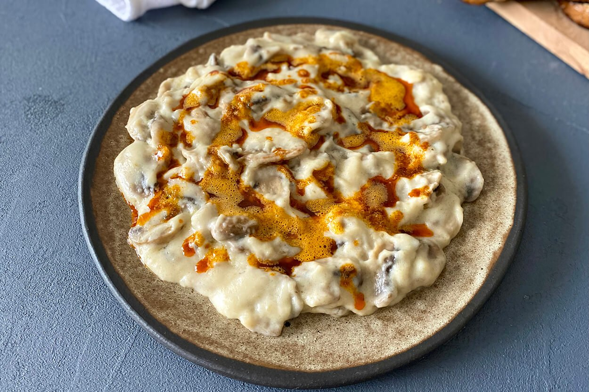
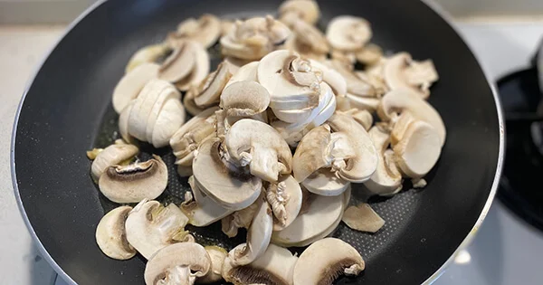
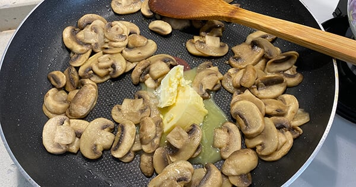
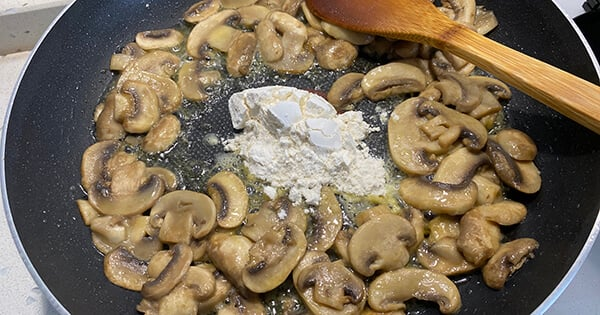
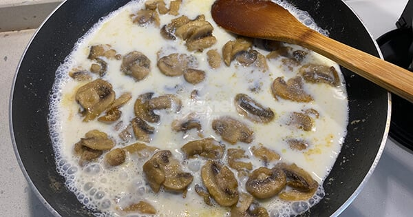
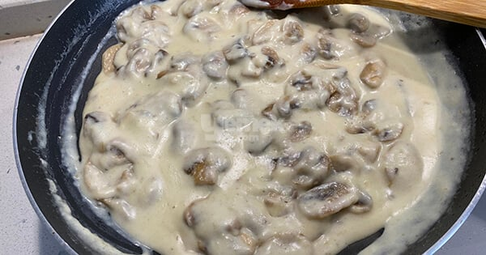
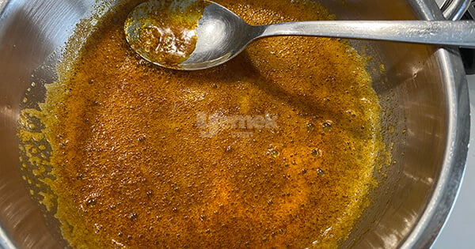

Mantarı hiç böyle denemiş miydiniz?
Çok pratik hazırlanan bu tarif inanılmaz lezzetli oluyor. Muhacir mutfağında çokça sevilen tariflerden de biri.
Tek başına tüketebileceğiniz gibi yemeklerin yanına da çok yakışıyor. Mantar severlerin favorisi olacak mantarlı karıştırma tarifimizi mutlaka denemenizi tavsiye ederiz.
Mantarlı Karıştırma Tarifi İçin Malzemeler
- 400 gram kültür mantarı
- 1 yemek kaşığı tereyağı
- 2 yemek kaşığı zeytinyağı
- 1 su bardağı süt
- 2,5 yemek kaşığı un
- 1 çay kaşığı tuz
Üzeri için:
- 1 yemek kaşığı tereyağı
- 1 çay kaşığı toz kırmızı biber
Nasıl Yapılır?
-
Tavaya zeytinyağını alın.Mantarları ince ince doğrayın ve tavaya ilave edin.
Mantarlar suyunu dalıp çekene kadar kavurun.
 -
Teyetağını ekleyip karıştırın.
 -
Unu da ekleyip kokusu çıkana kadar kavurun.
 -
Sütü ilave edin ve kıvam alana kadar karıştırın.
 -
Kıvam alınca ocaktan alın
 -
Üzerine toz biberli yağ gezdirip servis edelim.
 -
Afiyet olsun